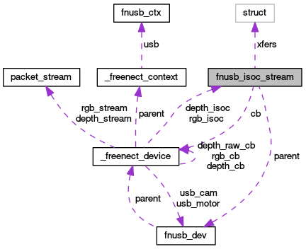

Main Page
Classes
Files
Class List
Class Hierarchy
Class Members
fnusb_isoc_stream Struct Reference
Collaboration diagram for fnusb_isoc_stream:

[
legend
]
List of all members.
Public Attributes
fnusb_dev
*
parent
struct libusb_transfer **
xfers
uint8_t *
buffer
fnusb_iso_cb
cb
int
num_xfers
int
pkts
int
len
Detailed Description
Definition at line
69
of file
usb_libusb10.h
.
The documentation for this struct was generated from the following file:
src/kinect/lib/
usb_libusb10.h
Generated on Sun May 13 12:39:03 2012 for CGR Localization by
1.6.3
 1.6.3
1.6.3